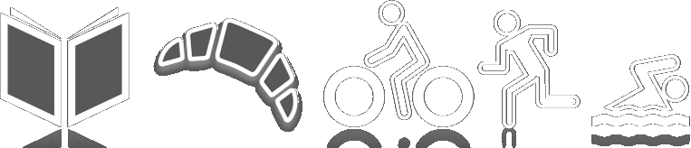

I am the third son of Carmen and Luis. Brother of José, Marcelo, Luis and Alicia
I was blessed 29 years ago when I met just by chance the best woman on earth and we married right away even though she was 19 and I was 21, together we have a daughter who is the best daughter a father can have, her name is Sol.
I firmly believe that the things and subjects that we like define us. In particular the ones that I like the most are:
Of course there are a lot more things I like but those ones are the ones I do no matter what, no matter the mood, the wheather the time of the year or the outcome.
I studied journalism at the UCV (Universidad Central de Venezuela, Central University of Venezuela) and I've worked at print shops, Ad agencies and newspapers since 1992.
Maybe by chance, fate or my natural inclination toward change, I did a lot of different things in the graphic industry. You know, when you have a daughter at 22 you just have to work.
I ended up being the lead of the infographic team at El Universal. It was the most important newspaper in the country. I was part of that team since 2001.
During that time had a lot of fun and I even won a couple of awards in 2005 and 2006 working with my friends Nico Ramallo and Vero Da Costa
In 2014 the Government took over the newspaper and they kicked out all internal oposition. I was happy to be one of them. After a couple of years I came to the Unites States and filed for asylum. Here I have worked on a diversity of places and positions: Houseman in a five stars hotel, Head baker in a bakery, carpenter doing framing, auto technician for a Lexus dealership. I have enjoyed all of them and I am ready for any challenge. I am 50. The story just begun.
Manuel